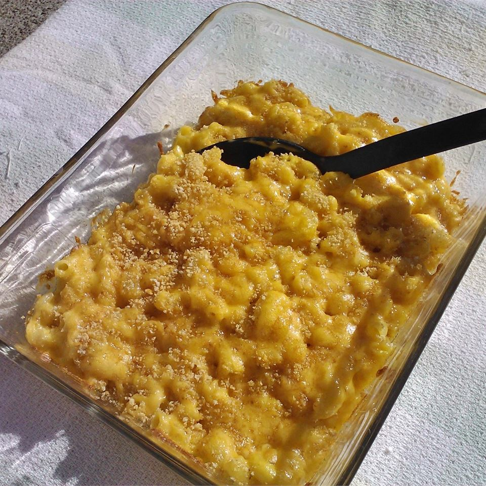

Mac n' cheese

Description:
This is a completely unpretentious, down-home macaroni and cheese recipe just like my grandma and mom always made.
Ingredients
- ¾ Pounds whole-wheat macaroni
- ¾ Cup butter
- ¾ Cup all-purpose flour
- 6 Cups milk, divided
- 1 Tablespoon Worcestershire sauce
- 1 Teaspoon mustard powder